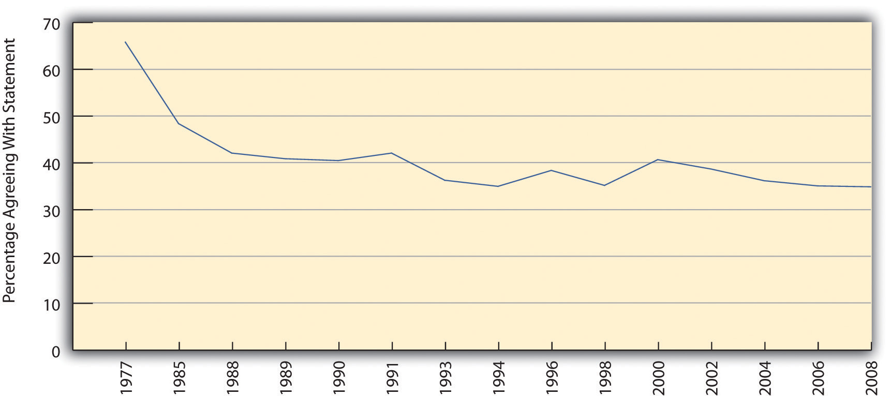
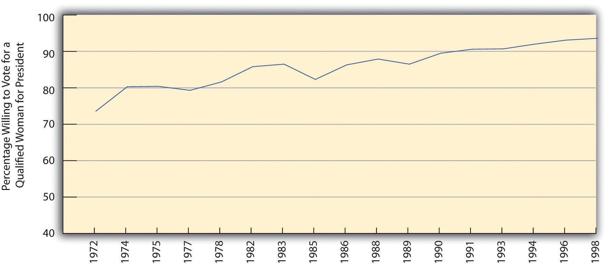
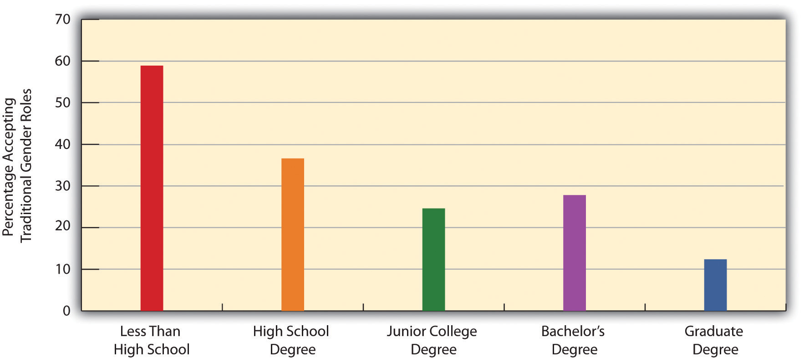
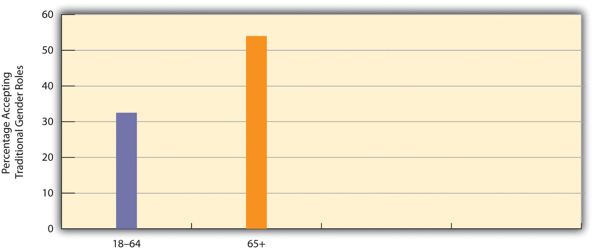

Recall that more than one-third of the public (as measured in the General Social Survey) agrees with the statement, “It is much better for everyone involved if the man is the achiever outside the home and the woman takes care of the home and family.” Do you agree or disagree with this statement? If you are like the majority of college students, you disagree.
Today a lot of women, and some men, will say, “I’m not a feminist, but…,” and then go on to add that they hold certain beliefs about women’s equality and traditional gender roles that actually fall into a feminist framework. Their reluctance to self-identify as feminists underscores the negative image that feminists and feminism hold but also suggests that the actual meaning of feminism may be unclear.
Feminism and sexism are generally two sides of the same coin. FeminismThe belief that women and men should be equal. refers to the belief that women and men should have equal opportunities in economic, political, and social life, while sexismThe belief that women are inferior to men. refers to a belief in traditional gender role stereotypes and in the inherent inequality between men and women. Sexism thus parallels the concept of racial and ethnic prejudice discussed in Chapter 7 "Deviance, Crime, and Social Control". Both women and people of color are said, for biological and/or cultural reasons, to lack certain qualities for success in today’s world.
Feminism as a social movement began in the United States during the abolitionist period before the Civil War. Elizabeth Cady Stanton and Lucretia Mott were outspoken abolitionists who made connections between slavery and the oppression of women.
Source: Stanton photo courtesy of U.S. Library of Congress, http://www.loc.gov/pictures/resource/cph.3a28976; Mott photo courtesy of U.S. Library of Congress, http://www.loc.gov/pictures/resource/cph.3a42877.
In the United States, feminism as a social movement began during the abolitionist period preceding the Civil War, as such women as Elizabeth Cady Stanton and Lucretia Mott, both active abolitionists, began to see similarities between slavery and the oppression of women. This new women’s movement focused on many issues but especially on the right to vote. As it quickly grew, critics charged that it would ruin the family and wreak havoc on society in other ways. They added that women were not smart enough to vote and should just concentrate on being good wives and mothers (Behling, 2001).Behling, L. L. (2001). The masculine woman in America, 1890–1935. Urbana: University of Illinois Press.
One of the most dramatic events in the women’s suffrage movement occurred in 1872, when Susan B. Anthony was arrested because she voted. At her trial a year later in Canandaigua, New York, the judge refused to let her say anything in her defense and ordered the jury to convict her. Anthony’s statement at sentencing won wide acclaim and ended with words that ring to this day: “I shall earnestly and persistently continue to urge all women to the practical recognition of the old revolutionary maxim, ‘Resistance to tyranny is obedience to God’” (Barry, 1988).Barry, K. L. (1988). Susan B. Anthony: Biography of a singular feminist. New York, NY: New York University Press.
After women won the right to vote in 1920, the women’s movement became less active but began anew in the late 1960s and early 1970s, as women active in the Southern civil rights movement turned their attention to women’s rights, and it is still active today. To a profound degree, it has changed public thinking and social and economic institutions, but, as we will see coming up, much gender inequality remains. Because the women’s movement challenged strongly held traditional views about gender, it has prompted the same kind of controversy that its 19th-century predecessor did. Feminists quickly acquired a bra-burning image, even though there is no documented instance of a bra being burned in a public protest, and the movement led to a backlash as conservative elements echoed the concerns heard a century earlier (Faludi, 1991).Faludi, S. (1991). Backlash: The undeclared war against American women. New York, NY: Crown.
Several varieties of feminism exist. Although they all share the basic idea that women and men should be equal in their opportunities in all spheres of life, they differ in other ways (Lindsey, 2011).Lindsey, L. L. (2011). Gender roles: A sociological perspective (5th ed.). Upper Saddle River, NJ: Prentice Hall. Liberal feminism believes that the equality of women can be achieved within our existing society by passing laws and reforming social, economic, and political institutions. In contrast, socialist feminism blames capitalism for women’s inequality and says that true gender equality can result only if fundamental changes in social institutions, and even a socialist revolution, are achieved. Radical feminism, on the other hand, says that patriarchyMale domination. (male domination) lies at the root of women’s oppression and that women are oppressed even in noncapitalist societies. Patriarchy itself must be abolished, they say, if women are to become equal to men. Finally, an emerging multicultural feminism emphasizes that women of color are oppressed not only because of their gender but also because of their race and class (Andersen & Collins, 2010).Andersen, M. L., & Collins, P. H. (Eds.). (2010). Race, class, and gender: An anthology (7th ed.). Belmont, CA: Wadsworth. They thus face a triple burden that goes beyond their gender. By focusing their attention on women of color in the United States and other nations, multicultural feminists remind us that the lives of these women differ in many ways from those of the middle-class women who historically have led U.S. feminist movements.
What evidence is there for the impact of the women’s movement on public thinking? The General Social Survey, the Gallup Poll, and other national surveys show that the public has moved away from traditional views of gender toward more modern ones. Another way of saying this is that the public has moved toward feminism.
To illustrate this, let’s return to the General Social Survey statement that it is much better for the man to achieve outside the home and for the woman to take care of home and family. Figure 11.4 "Change in Acceptance of Traditional Gender Roles in the Family, 1977–2008" shows that agreement with this statement dropped sharply during the 1970s and 1980s before leveling off afterward to slightly more than one-third of the public.
Figure 11.4 Change in Acceptance of Traditional Gender Roles in the Family, 1977–2008
Percentage agreeing that “it is much better for everyone involved if the man is the achiever outside the home and the woman takes care of the home and family.”
Source: Data from General Social Survey.
Another General Social Survey question over the years has asked whether respondents would be willing to vote for a qualified woman for president of the United States. As Figure 11.5 "Change in Willingness to Vote for a Qualified Woman for President" illustrates, this percentage rose from 74% in the early 1970s to a high of 94.1% in 2008. Although we have not yet had a woman president, despite Hillary Rodham Clinton’s historic presidential primary campaign in 2007 and 2008 and Sarah Palin’s presence on the Republican ticket in 2008, the survey evidence indicates the public is willing to vote for one. As demonstrated by the responses to the survey questions on women’s home roles and on a woman president, traditional gender views have indeed declined.
Figure 11.5 Change in Willingness to Vote for a Qualified Woman for President
Source: Data from General Social Survey.
Because of the feminist movement’s importance, scholars have investigated why some people are more likely than others to support feminist beliefs. Their research uncovers several correlates of feminism (Dauphinais, Barkan, & Cohn, 1992).Dauphinais, P. D., Barkan, S. E., & Cohn, S. F. (1992). Predictors of rank-and-file feminist activism: Evidence from the 1983 General Social Survey. Social Problems, 39, 332–344. We have already seen one of these when we noted that religiosity is associated with support for traditional gender roles. To turn that around, lower levels of religiosity are associated with feminist beliefs and are thus a correlate of feminism.
Several other such correlates exist. One of the strongest is education: the lower the education, the lower the support for feminist beliefs. Figure 11.6 "Education and Acceptance of Traditional Gender Roles in the Family" shows the strength of this correlation by using our familiar General Social Survey statement that men should achieve outside the home and women should take care of home and family. People without a high school degree are almost 5 times as likely as those with a graduate degree to agree with this statement.
Figure 11.6 Education and Acceptance of Traditional Gender Roles in the Family
Percentage agreeing that “it is much better for everyone involved if the man is the achiever outside the home and the woman takes care of the home and family.”
Source: Data from General Social Survey, 2008.
Age is another correlate, as older people are more likely than younger people to believe in traditional gender roles. Again using our familiar statement about traditional gender roles, we see an example of this relationship in Figure 11.7 "Age and Acceptance of Traditional Gender Roles in the Family", which shows that older people are more likely than younger people to accept traditional gender roles as measured by this statement.
Figure 11.7 Age and Acceptance of Traditional Gender Roles in the Family
Percentage agreeing that “it is much better for everyone involved if the man is the achiever outside the home and the woman takes care of the home and family.”
Source: Data from General Social Survey, 2008.